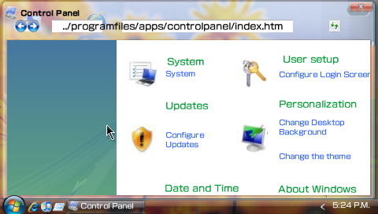

Control Panel
With control panel, you can customize PspWvista as you want. It keeps your configuration into the input history, which means tha if you delete input history ( [Tools] >[Delete input history] ), all configuration is deleted and restored to default settings.

Icons of control panel
- About: you can view the credits and, the changelog and more...
- Display: you can change the background (480 x 272 px), select a background color and shows or not desktop icons.
- Help center: opens the help center.
- Languages: actually disabled, it would be for selection a language for PspWvista interface.
- Login:in this section you can change your password and select a user image.
- Media: you can configure if PSPtunes where opens (in another tab or in PspWvista).
- Screensaver: you can select a screensaver and configure it.
- Sounds: allows to enable/disable sysem sounds.
- Stuck pixel fixer: with this tool you can try to repare dead pixels.
- System: view info about the system and theme.
- Taskbar and start menu: change options of taskbar and start menu.
- Theme: for change the theme.
- Time: you can disable the auto-refresh clock.
- Updates: for view bugfixes and ultimate versions.
Related tasks